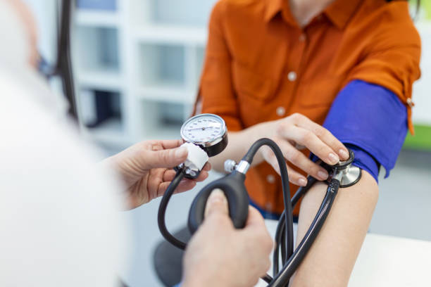
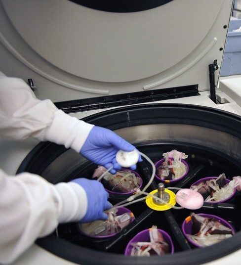
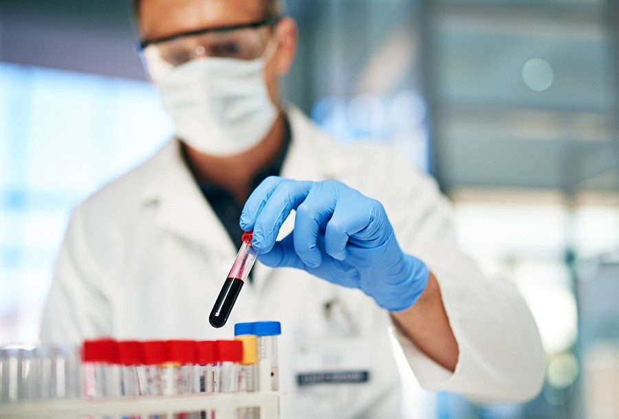
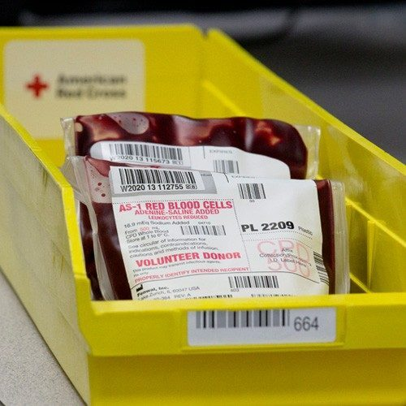
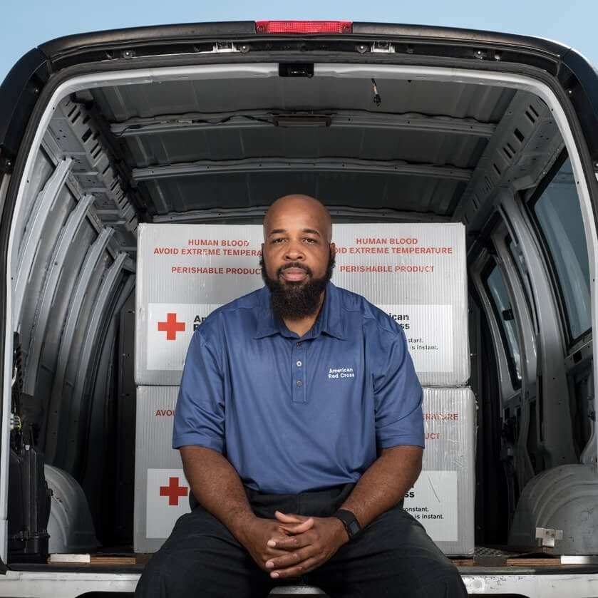
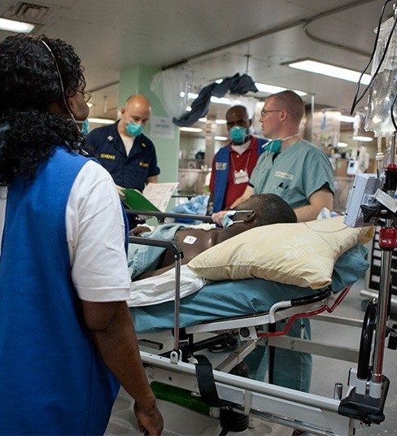

Lifesavers Network:Hope in Drop
Home Page
Term And Condition
Steps Of Blood Donation
BMI
Login/Sign Up
What Happens to Donated Blood
Your blood journeys through many steps and tests that ensure our blood supply is as safe
as possible and helps as many people as possible.
Learn About Each Step of the Blood Journey 
Step One
The Donation
You arrive for your blood donation appointment.
Health history and mini physical are completed.
For a whole blood donation, about 1 pint of blood is collected several
small test tubes of blood are also collected for testing
Your donation, test tubes and your donor record are labeled with an
identical bar code label
Your donation is kept on ice before being taken to a Red Cross center
for processing; the test tubes go to the lab.

Second Step
Processing
At our processing center, information about your donation is scanned
into a computer database.
Most whole blood donations are spun in centrifuges to separate it
into transfusable components: red cells, platelets, and plasma.
Plasma may be processed into components such as cryoprecipitate,
which helps control the risk of bleeding by helping blood to clot.
Red cells and platelets are leuko-reduced, which means your white
cells are removed in order to reduce the possibility of the recipient
having a reaction to the transfusion.
Each component is packaged as a “unit,” a standardized amount that
doctors will use when transfusing a patient.

Third Step
Testing
In parallel with Step 2, your test tubes arrive at a testing laboratory.
A dozen tests are performed, to establish the blood type and test for
infectious diseases.
Test results are transferred electronically to the processing center
within 24 hours.
If a test result is positive, your donation will be discarded and you will
be notified (our test results are confidential and are only shared with
the donor, except as may be required by law).

Step Four
Storage
When test results are received, units suitable for transfusion are
labeled and stored.
Red cells are stored in refrigerators at 6ºC for up to 42 days.
Platelets are stored at room temperature in agitators for up to five days.
Plasma and cryo are frozen and stored in freezers for up to one year.

Step Five
Distribution
Blood is available to be shipped to hospitals 24 hours a day, 7 days a
week.
Hospitals typically keep some blood units on their shelves, but may
call for more at any time, such as in case of large scale emergencies.

Step Six
Transfusion
An ill or injured patient arrives at a hospital or treatment center
Physicians determine whether the patient requires a transfusion and,
if so, which type
Blood transfusions are given to patients in a wide range of ,
circumstances, including serious injuries (such as in a car crash)
surgeries, child birth, anemia, blood disorders, cancer treatments, and many others.
A patient suffering from an iron deficiency or anemia may receive red
blood cells to increase their hemoglobin and iron levels, improving
the amount of oxygen in the body.

 E-mail=monushaha2005@gmail.com
E-mail=monushaha2005@gmail.com